When you test your programs,
there are really three kinds of
techniques you can use to, locate and correct the
defects in your code.
When you test your programs,
there are really three kinds of
techniques you can use to, locate and correct the
defects in your code.
- Assertions and exceptions can be place placed inside your code to make a method's preconditions and postconditions explicit. If a method takes a parameter and it assumes that the parameter always contains the values 1, 2, 3, or 4, you'd check the parameter value before it was used, and throw an exception if it was incorrect. Exceptions and assertions are used to expose errors made when calling methods, not when defining them.
- Tracing or logging is used when errors occur during program runtime, but you don't want to interrupt the program like you would with an exception. Instead a log file is created that can later be examined to track down errors.
- Finally, debugging is the interactive examination of your program. You'll learn how to debug your code using the Eclipse debugger in the Swatting Bugs lecture this week.
While assertions, logging and debugging are all important
techniques, in this lecture, we want to look at the single most
important testing tool at your disposal: the unit test.

println() statements.
In this lecture you'll learn how to write unit tests using Eclipse,
and the JUnit testing framework that powers Web-CAT. With Eclipse,
we'll use the latest version of JUnit, JUnit 4:
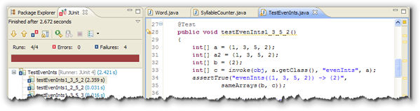
Rather than hand-crafted unit tests, you'll learn how to write your unit tests by calling the methods in the JUnitAssert class.
Testing: the Big Ideas
Testing and debugging are really two sides of the same coin; both are designed to ensure that your program runs correctly. Testing is designed to expose errors, while debugging is used to locate and fix the errors that are discovered through testing. Of course once you've fixed an error, you need to make sure you test it to show that it does what you expect.
One person who has been very influential in the area of testing is Edsgar Dijstra, the Dutch professor famous for his ACM "Goto considered harmful" paper that's often credited with sparking the structured programming revolution in the sixties and seventies.
Dijkstra is responsible for two really big ideas when it comes to testing:
- testing does not prove that your program is correct.
- exhaustive testing is impossible.
Testing and Correctness
First is the idea that testing can never prove that your program is correct. Thorough testing can show the presence of bugs, but it can never prove that all the bugs in your code have been found.
Dijkstra was a proponent of software verification and the discipline known as formal methods; he wanted to make a very clear distinction between verified code—that is, code that is mathematically proven to be correct—and code that was merely well tested.
In fact, though, the promise of formal verification has not proved to be as useful as Dijkstra first hoped, both because of the difficulty and the cost.
Exhaustive Testing
Of course, if you could test every possible input value, then maybe you could prove that your code has no bugs. Dijkstra anticipated this objection as well, and proved that such exhaustive testing was physically impossible.
Here's a quote from his original paper which dealt with the microcode contained in a CPU:
Let us restrict, for a moment, our attention to the hardware and let us wonder to what extent one can convince oneself of its being properly constructed. Some years ago a machine was installed on the premises of my University; in its documentation it was stated that it contained, among many other things, circuitry for the fixed-point multiplication of two 27-bit integers. A legitimate question seems to be: "Is this multiplier correct, is it performing according to the specifications?".
The naive answer to this is: "Well, the number of different multiplications this multiplier is claimed to perform correctly is finite, viz. 254, so let us try them all." But, reasonable as this answer may seem, it is not, for although a single multiplication took only some tens of microseconds, the total time needed for this finite set of multiplications would add up to more than 10,000 years! We must conclude that exhaustive testing, even of a single component such as a multiplier, is entirely out of the question.
Today, you might write a function that takes two 32-bit ints. Using Djikstra's calculations, if you could test a million calculations a second, then testing all possible combinations of those two 32-bit ints would take you 585,000 years.
What Are Unit Tests?
Testing involves not only carefully deciding what values to feed into your program, but for every input value, you absolutely must know exactly what the expected output should be. Simply calling a method is not the same as testing the method.
Testing is when you call a method and then compare it's expected output with its actual output.
Of course, for that to work, you have to know the expected output ahead of time. Not only that, but you have to be able to examine the results and easily see when the expected and actual outputs differ. For that, you'll use a test harness.
The Test Harness
A test harness is a program that is designed to feed arguments to your class or methods and then, to evaluate the correctness of the results. This simplest kind of test harness is the "hand-rolled" test program, similar to the PongBallTest program you wrote in class.
A hand-rolled test program creates an instance of the class you are testing, and then calls each of the methods in the class. Each time a method is called, the test program prints out the expected and actual values of the object's instance variables.
Hand-rolled tests are fine, but the real problem comes with
evaluating the results. In class, when we wrote the
PongBallTest program, for instance, many of you didn't
notice if the actual values for x and
y were different from the expected
values because there was so much output.
Carefully examining each line of output in a test program is very, very time consuming. That's where automated unit tests are much more efficient.
Automated unit testing programs are an entire category of software. The most popular is the JUnit family of programs. The most recent version of JUnit is version 4, and that's what we'll use with our Eclipse programs.
Testing the Calculator Class
We're going to start our examination of JUnit by writing some
tests for a class named
Calculator.java which was originally written by
Stephen Edwards at Virginia Tech. (He's the developer of the
Web-CAT grading system we've been using.)
Download the code by clicking the hyperlink in this
paragraph and then add it to an existing or
new Eclipse project:
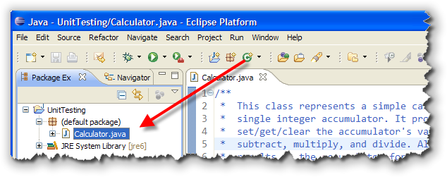
Then, go ahead and open it in the Eclipse editor. Add your own author and version tags to the header. Note that there's at least one (possibly more)
Checkstyle errors. You can check any file using the built-in
Eclipse Checkstyle plugin by just right-clicking the file and
selecting Check Code with Checkstyle from the context menu
like this:
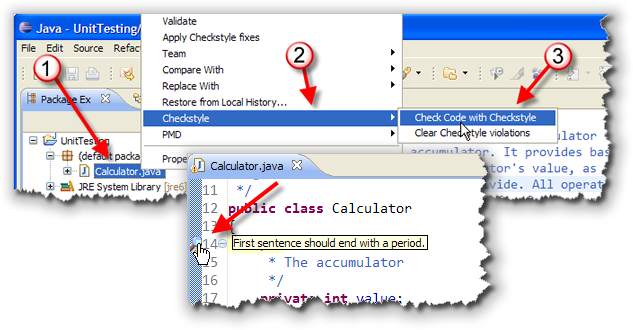
Once that's done, go ahead and correct all of the Checkstyle errors. The warnings will appear as a small magnifying glass icon in the left margin. If you hover over the icon, you'll see a small popup like that shown in the picture here. You can also activate Checkstyle for all of the code in
your project. To do that:
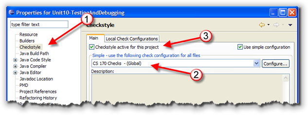
- right-click the project (not the file)
- choose Properties on the context menu
- select Checkstyle from the tree on the left
- select the CS 170 checks as the global checks to apply
- check the Checkstyle active for this project checkbox
The Calculator Class
Before we get to testing, let's spend a few minutes looking through the source code of the Calculator class.
- The class has a single field (
value) which acts as the accumulator for the calculator:

- The constructor initializes the accumulator to zero (although that's
really not necessary of course):

- There are methods to get, set and clear the
accumulator, as well as the normal four functions that you'd
expect in a calculator: add, subtract, multiply and divide:
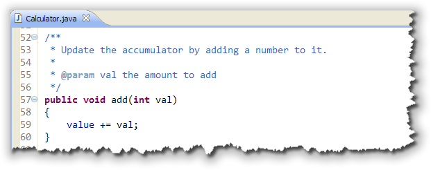
Each of the arithmetic operations puts its result back into the accumulator and uses the accumulator as its left-hand operand.
Creating the Test Case
With JUnit, you'll put your unit tests inside a TestCase class
that can include a number of tests. To create the CalculatorTest
class, right-click on the Calculator.java file in the Package
Explorer (on the left) and then select New->JUnit Test Case
from the context menu:
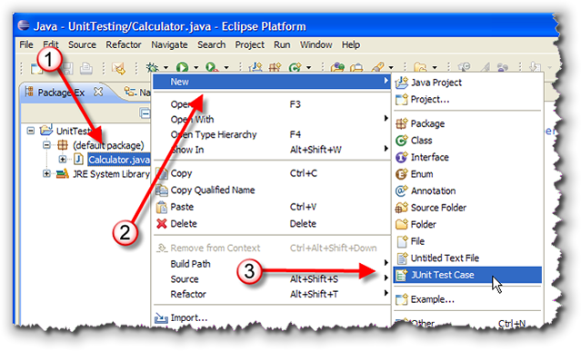
This will activate a wizard in Eclipse to help you create your test case class for the Calculator class.Test Class Wizard
When the Test Class Wizard appears, as shown here:
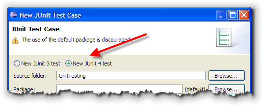
start by clicking the radio button to select JUnit 4 as the testing framework, as shown in the screenshot. In the center of the dialog there are three items you'll want
to pay attention to:
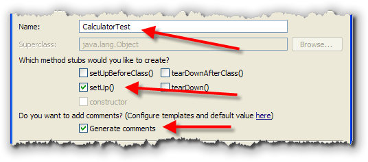
- Notice that the name CalculatorTest has been automatically generated by the Test Class Wizard, based on the file selected in the Package Explorer window.
- Also, make sure that the checkbox next to
setUp()is selected to generate a stub for a test fixture, (which I'll explain shortly.) - Finally, I'd go ahead and have Eclipse generate comments as well.
Finally, at the bottom of the dialog, make sure that Calculator
is the class under test and then click the Next button,
(not the Finish button!)
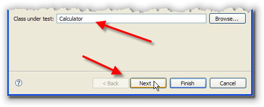
Generating Test Methods
In the next step of the wizard, you will see a tree view
showing the methods contained in the Calculator class.
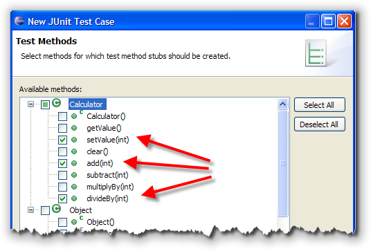
For each instance method you check in this view, the wizard will create a test method stub. In my example, you can see I've checkedsetValue(), add(),
and divideBy(). Normally, you'll want to test all
of your methods, and you'll have several test methods for each
method under test. I use this screen just to generate a few
empty test methods to get started.
When you're done, click the Finish button. If this is
the first test case class in this project, you'll be told
that the JUnit libraries are not in the build path:
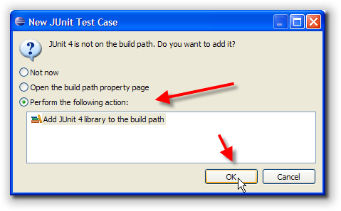
Just click the radio button shown here and click OK. Eclipse will add the necessary libraries to your project. Then, Eclipse will generate a new CalculatorTest.java file in your project, and open this new file in the editor: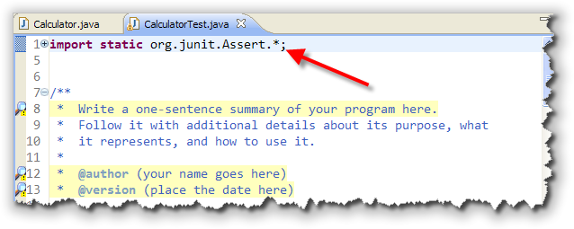
Run the Tests
To run the test, first make sure that CalculatorTest.java
is the selected file in the editor. (You can select the file tab
at (1) or double-click the file in the Package Explorer view (the
left pane):
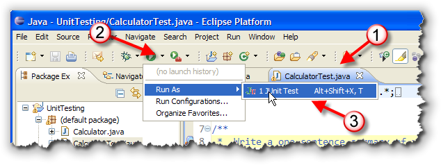
From the Run menu, select Run As->JUnit Test. This will run all of the test cases in your new test class. Not, remember, the tests are just stubs at this point! All of them are designed to fail.You can see the results in the JUnit tab to the right of to the Package Explorer tab. The test case stubs that were generated by the wizard have all failed. Let's look at the output briefly:
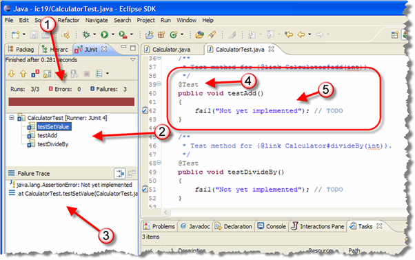
- At the top of the window is a little tool bar you can use to re-run your tests. Right below that, (at #1) is what I call a "scoreboard". It tells you how many tests were run, how many had errors and how many failed. (Errors mean that the test couldn't be run for some reason, like a missing class.) Below that is a bar that will contain green and red segments: red for failures and green for successes. In our case all the tests fail, so it's solid red.
- At #2 is a tree showing each test that failed. By clicking on an individual test you can see a more detailed message in the Failure Trace pane, which I've marked #3 below.
- If you examine the code in CalculatorTest.java,
you will see that each test case is a
public voidmethod that has no parameters. It is preceded by a Java annotation,@Test, that is used by JUnit to identify test methods.
By convention, test method names begin with the prefix "test"; this was required in earlier versions of JUnit but is not required in JUnit 4. Each generated test case stub contains just a single line in its body:
fail( "Not yet implemented." );
Which I've marked as #5.
Examining the JUnit4 "Skeleton" Code
Now that we have the stubs, we need to write the actual code to test the Calculator class. Before we write our tests, though, let's look a little more at the JUnit Test Case file and some of the Java features it uses.
Static Imports
The first feature is the use of static imports. When you
add a static import like that shown in line 1, you can then
use any of the static methods in the imported class
without using the class name:
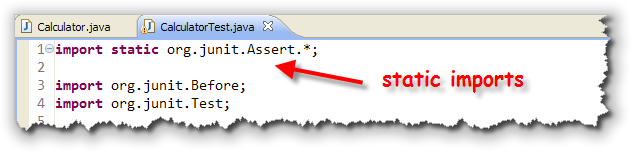
Notice that when you use a static import, the star at the end of the line means "import all of the static methods in the specified class".With a regular (non-static) import, the star means "import all of the classes in the specified package". You probably remember static imports from Unit 4. There you learned that if you add the line:
import static java.lang.Math.*;
to your program, you can then use methods like min()
and max() without having to add the Math
prefix. JUnit4 programs do the same thing for the methods in the
org.junit.Assert class.
Annotations
The second feature employed by JUnit 4 is the use of
annotations. Annotations are special markers added to
your code that allows an external tool (like JUnit) to
process it in special ways:
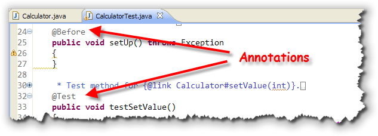
JUnit 4 uses the annotations:@Testto identify test methods.@Beforeto identify methods that should be called immediately before each test is run.@Afterto identify methods that should be run immediately after each test is finished.
Each of these annotations needs to be
imported using a regular (not static) import like that
shown in the previous screenshot. Notice that while the starter code
contains imports for org.junit.Before and
org.junit.Test, there is no import for
org.junit.After because I didn't specify a
tearDown() method when filling in the first
dialog in the Test Case Wizard.
The setUp() and
tearDown() names were used in earlier versions of
JUnit for the @Before and @After methods.
Most programmers still use these original names, but JUnit 4
doesn't require this.
Writing Test Methods
To test your class, you'll write at least one separate test method for each operation. (The Test Case Wizard creates one test method for each checked method in the class you are testing.)
Inside each test method you will normally:
- create an object of the class you are testing, and make
sure that it is placed in a known state. In our case
we'll create a
Calculatorobject, with the accumulator set to 0. - Then, you'll call the different mutator methods that you are testing. Each test method should generally make only one change to the object.
- Finally, after calling the mutator, you'll call an accessor method and compare the expected value with the actual value returned by the accessor.
Let's try a simple example. Here's some code you can add to
the testSetValue() method. Delete the line of
code that the method currently contains and replace it with
the code shown here:
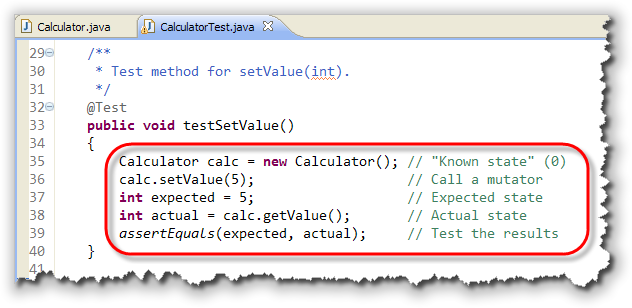
Once that's done, save the test program and run your tests again. Note how this method:- Creates a
Calculatorobject - Modifies the calculator by calling
setValue() - Compares the expected value (5) with the actual value
returned by calling
getValue()
This last step is done by using a special JUnit assertion. Let's go ahead and look at that now.
JUnit Assertions
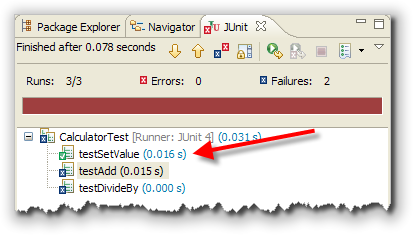
JUnit assertions do not use theassert keyword, which you
learned about in the last lesson. When you use the assert
keyword, you place it inside your normal source code, and, if the assertion
fails, the program is terminated.
Instead, JUnit assertions are special methods that JUnit uses to compare actual and expected values inside a JUnit test program (not inside your regular source code). When you run the JUnit Test Case class, your program does not stop when a test is failed. Instead, all of the tests are run, and the results are displayed in the special JUnit window.
The JUnit assertion method that you'll use most
often is named assertEquals(). When you use
assertEquals(), the first parameter is the value you expect
and the second parameter is the actual value produced by calling one of
your object's accessors.
Failed Assertions
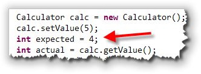
Now that you know what both a passed test and a failed test look like, let's change the test we used a little, so you can see what a real failure looks like.Change the expected value to 4 as shown in the screenshot to the right. Since the actual value will be 5, not 4, the test will fail.
Re-run the tests, and this time, examine the Failure Trace
area immediately below the list of tests that were run:
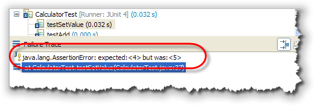
Notice how the message points out the actual and expected values.Other Assertion Methods
If you want to supply a hint or other information about what
the test is doing (to help in debugging, you can use a
three-parameter version of assertEquals() like
this:
 The first parameter is an error message that you want to have displayed
whenever the selected test fails. Often, you can use other variables
when composing the message, to help you track down problems that can
occur. Here's what the failure looks like after adding a message
parameter:
The first parameter is an error message that you want to have displayed
whenever the selected test fails. Often, you can use other variables
when composing the message, to help you track down problems that can
occur. Here's what the failure looks like after adding a message
parameter:
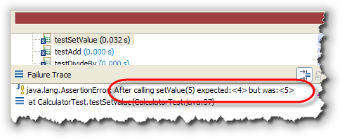
Floating-Point Assertions
For double or floating-point tests, you'll
often have situations that are logically and mathematically
equal, but where your tests still fail.
Here, for instance, is an assertion comparing two values that
are mathematically equal:
 When you use the "regular" version of
When you use the "regular" version of assertEquals(),
you'll see that the result fails with the following error message:
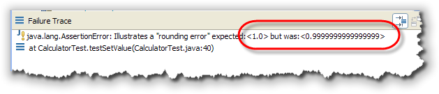
In these cases, you can pass another parameter toassertEquals(),
following the actual value. (If you supply an error message,
then it would be a fourth parameter; if you don't add your
own error message, then it will be the third parameter.)
This extra parameter is a tolerance value that is
used to determine when two values are effectively equal.
You can use 1E-14 as a general-purpose tolerance value,
like this:
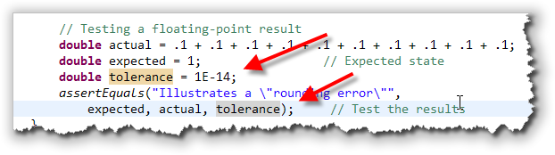
With this change, the test shown here no longer fails.Boolean Tests
To test boolean methods or Boolean expressions,
use the assertTrue() and assertFalse()
methods. You can also use these in place of assertEquals()
by creating an expression using relational operators, but if you do,
then the error messages are not very informative. ("Test failed. Too bad."):
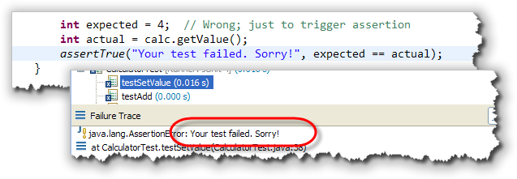
As with the other assertions, the use of a user-supplied error message, like I've used here, is optional. Although my message here is kind of silly, if you use the JUnit Boolean assertions, you'll want to make sure that your error messages let you know exactly what failed, since you won't be shown the actual and expected values, or the Boolean expression that was tested and failed.Testing for null
Sometimes, for objects, you may need to test if an
object reference is null or not. You can do that with
the assertNull() and assertNotNull()
methods.
If you'd like to see more of the JUnit 4 assertions you can look them up in the online JavaDoc at http://junit.sourceforge.net/javadoc_40/.
Writing a Test Fixture
In the test method that we just wrote, we first created a
Calculator object set to its default state. In fact, probably
all of your test methods will require this exact line of code.
To simplify your code, you might be tempted to create the
Calculator object as an instance variable and
then initialize it in the test class constructor.
Unfortunately, that won't work, because you want all of your test methods to be completely independent. You don't know (nor should you know) what order the tests you write will be run in, and no single test should be able to affect the outcome of any other test.
If you create the Calculator as an
instance variable, it will be initialized when the class loads,
but it won't be reinitialized for subsequent test methods;
you won't be running with a clean slate. You also can't assume
that test methods will run in any particular order, so you can't create
sequences of tests that take prior method modifications into
account. Basically every test has to be self-contained.
That doesn't mean that you have to write the same duplicate
object creation code in each test method though. The solution is to:
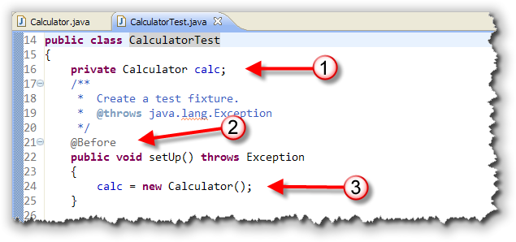
- create an instance variable that contains the object under test
- and then, create a
setUp()method that initializes the instance variable putting it into the "clean slate" state you need before each test runs.
The setUp() method, which is known as a test fixture,
will be run before each test. With JUnit 4, the method does not need
to be named setUp() (although it usually is by convention), but
it does need to be preceded by the @Before annotation.
One you have the test fixture done, why don't you finish up
CalculatorTest by writing test methods for all of the other
methods in Calculator. You can just copy the existing,
working method (that's what I do), and then just change the
name and modify the code. To do that, though, you'll need to
also think about what you should test. Let's look at
that briefly before we finish up this lesson.
Selecting Test Cases
Now that you know how to write a test case, let's talk about what kind of test cases you should write. You already know that you should have at least one test case for each method in the class you are testing, but actually, you'll need quite a few more, each one handling a particular kind of input.
- First, you should have some values that represent legitimate values that your program is expected to handle normally. You don't need a lot of these. In a square root program, you'd test some values greater than 0. In a grade calculating program you'd test values for each of the grades: A – F.
- Next, you need to test boundary cases. Boundary cases include those values that are legitimate, but likely to produce incorrect output if there is an error in your code. If you are calculating letter grades from percentages, for example, testing 85% for the "B" grade would be a regular legitimate value. You'd also need to test the boundary conditions 80% and 79% in case you had used the relational operators incorrectly. These would be the boundary conditions.
- Finally, you need to handle some negative cases: input that you expect to fail. You want to make sure that if you supply the wrong kinds of values, that the method doesn't some how magically produce output.
Regression Testing
Whenever you fix a bug in your code, you want to make sure that the bug doesn't reappear later. Of course, this really applies to code in the "real" world, and not the code that you'll turn in for homework assignments. You don't want a bug that was fixed in Version 1 of your program to magically reappear when you release Version 5, a problem known as cycling.
The best way to prevent this is to add a test to your Test Case class that specifically tests for that bug. As time goes on, the Test Case class will get larger and larger as more bugs are fixed and tests are added.
Then, every time you fix a new bug, you'll run all of the tests you've collected, so your new fix can't reintroduce an old bug. This practice of testing your code against a collection of tests from past bugs is known as regression testing, and it's another reason to keep your test data, and to use automated testing tools like JUnit.
Black-box and White-box
One last type of testing you should know about is the difference between black-box and white-box testing. So far, all of the testing that we've done tests the program's actual behavior against the expected output. That means we're testing against what the program should be doing, or the specification. This is called black-box testing.
The only problem with black-box testing is that it doesn't
ensure that all the internal portions of the code are actually
tested. It's possible that your inputs don't test every single
branch in an if or switch statement.
White-box testing "looks inside" your code and tries to make sure that every portion of your code is actually tested. The most common kind of white box testing is called coverage testing. Coverage testing uses specialized tools that are actually very expensive. One common tool is named Clover. While we don't have a copy of that here at OCC, Web-Cat actually uses Clover to measure the percentage of your code is actually tested, and your homework assignments this week will include coverage testing as part of the grading.
Coming Up ...
In this lesson, you learned how to use Eclipse and JUnit 4 to write unit tests that test your code against a program specification. You also learned how to select test cases and how to check for test coverage.
In the next lesson, we'll look at using the Eclipse debugger to help you fix those errors your tests exposed.